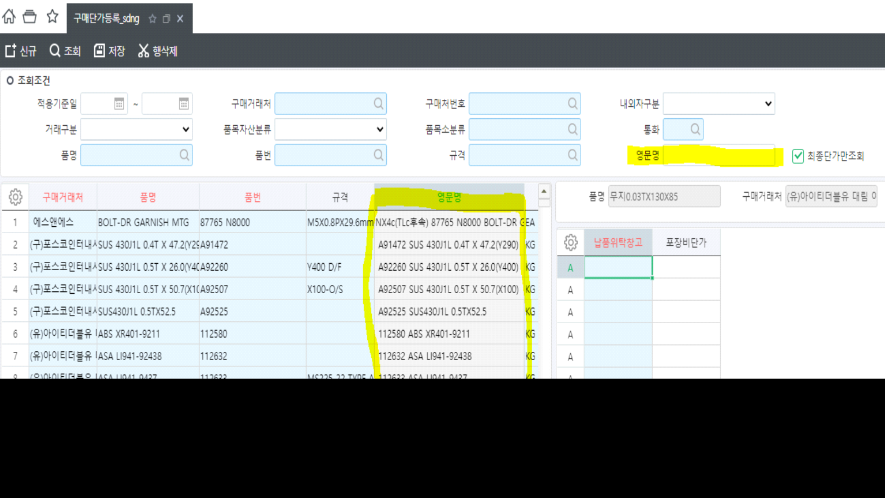
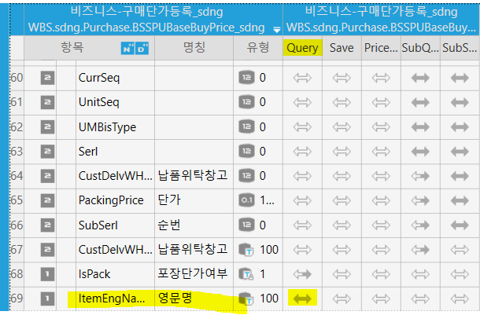
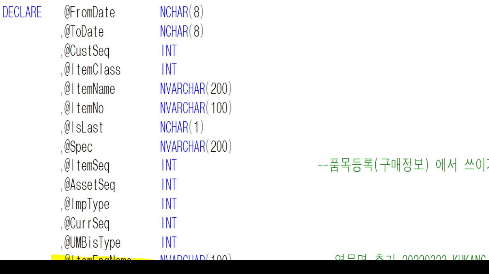

- 3/23 - 조회조건, 시트항목 추가 (영문명)
- 구매단가등록_sdng

1. 조회조건 추가
** (1) 영문명**
** - TEXT**
** - 품목마스터의 영문명과 Like조건**
영문명 - ItemEngName
2. 시트항목 추가
** (1) 영문명**
** - TEXT, DIS**
** - 규격컬럼 뒤로 추가해주세요.**
영문명 - ItemEngName - DIS;CLC;
- 비즈니스
- BSSPUBaseBuyPrice_sdng
Query에만 추가

** SP

DECLARE (조회조건)
- @ItemEngName NVARCHAR(100)
SELECT (조회조건)
- @ItemEngName = ISNULL(ItemEngName, '')
SELECT
- B.ItemEngName AS ItemEngName (B = _TDAItem)
WHERE
- AND (@ItemEngName = '' OR LTRIM(B.ItemEngName) LIKE @ItemEngName + N'%') -- 영문명 추가 (앞에 공백 있는 데이터가 존재하여 LTRIM 처리) 20220323 KHKANG